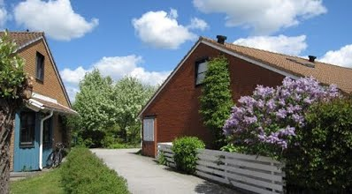

Brf Bronsyxan är en bostadsrättsförening i Gunnesbo, Lund. Föreningen bildades 1981, och gav i uppdrag åt John Mattson Byggnads AB (JM) att bygga radhusen och övriga anläggningar i kvarteret. Föreningen är helt fristående och drivs av medlemmarna själva.
Inom föreningen finns totalt 100 st lägenheter i radhusform, från tvåor till femmor. Gatuadresserna är Gunnesbovägen 1-201 (udda nummer).
Bostadsrätt innebär, att de boende genom bostadsrättsföreningen själva äger och förvaltar bostäderna och gemensamma anläggningar. Föreningen drivs av en styrelse som medlemmarna utsett.
Som bostadsrättshavare måste du bo i föreningen och vara medlem i bostadsrättsföreningen. Det är bara bostadsrättsinnehavare som kan vara medlemmar i föreningen. Att vara bostadsrättsinnehavare innebär att du har nyttjanderättlägenhetens till din lägenhet utan begränsning i tiden. Månadsavgiften bestäms på grundval av lägenhetens s.k. andelstal – d.v.s. respektives lägenhets andel i själva föreningen – och ska täcka föreningens alla kostnader till självkostnadspris, dvs. vad som behövs för underhåll av fastigheterna, värme, vatten, sophämtning, snöröjning, räntekostnader etc.
Detta innebär att alla medel föreningen har är pengar inbetalade av tidigare och nuvarande medlemmar. Kostnader som drabbar föreningen drabbar samtliga medlemmar enligt det andelstal medlemmens lägenhet har.
Som bostadsrättshavare och medlem har du inflytande över föreningens verksamhet, rätt att närvara vid föreningsstämma (årsmöte) och kan väljas till styrelseledamot. Du ansvarar för det inre underhållet av bostaden och du är skyldig att följa föreningens stadgar. Nyttjanderätt kan förverkas vid misskötsel och allvarliga kontraktsbrott.